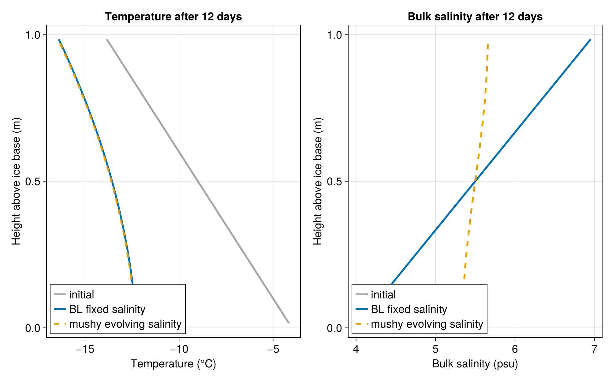
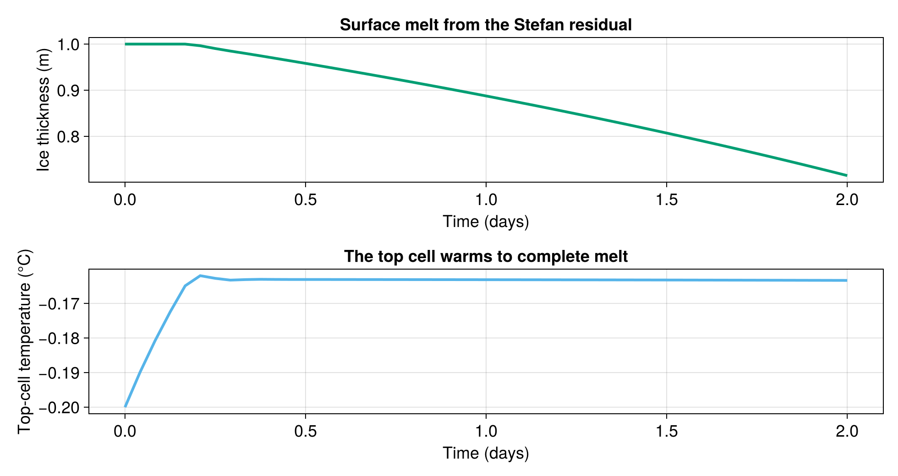
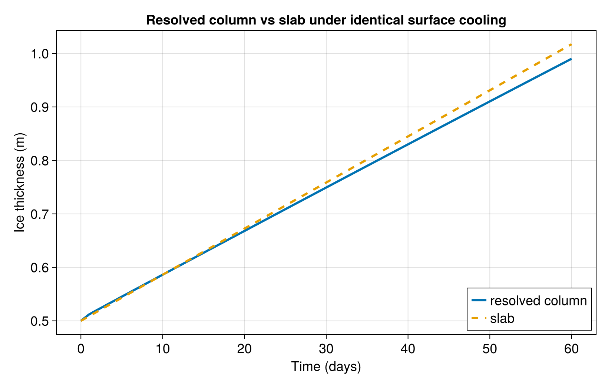

Column energy thermodynamics comparison
This example compares two one-dimensional column configurations:
- a Bitz-Lipscomb-style fixed-salinity enthalpy column, constructed with
prescribed_salinity_enthalpy_thermodynamics; - an evolving-salinity mushy column, constructed with
evolving_salinity_mushy_thermodynamics.
Both columns start from the same temperature and bulk-salinity profiles and use the same surface cooling and basal ocean heat flux. The fixed-salinity column keeps bulk salinity prescribed, while the mushy column diffuses bulk salinity with closed salinity boundaries.
Install dependencies
using Pkg
pkg"add Oceananigans, ClimaSeaIce, CairoMakie"using Printf
using Oceananigans
using Oceananigans.Fields: interior, set!
using Oceananigans.Units
using ClimaSeaIce
using ClimaSeaIce.SeaIceThermodynamics
using CairoMakieModel configuration
Each column is the vertical grid of a SeaIceModel. Fluxes follow the model convention shared with the slab: positive means heat leaving the ice, so a positive top flux cools the column (heat into the air) and a positive bottom flux warms it (ocean heat into the base). With flux boundaries on both faces the ice thickness does not change, and the columns keep a height of 1 m.
Nz = 32
unit_column_grid() = RectilinearGrid(size = Nz, z = SeaIceColumnDiscretization((0, 1)), topology = (Flat, Flat, Bounded))
relation = QuadraticLiquidusEnergyRelation(Float64)
top_surface_flux = 15.0 # W m^-2, cooling at the top face (heat into the air)
bottom_ocean_flux = 2.0 # W m^-2, ocean heat input at the bottom face
heat_boundary_conditions = (top = FluxBoundary(), bottom = FluxBoundary())
energy_transport = ConductiveTemperatureTransport(conductivity = 2.0)ClimaSeaIce.SeaIceThermodynamics.ConductiveTemperatureTransport{Float64, Float64}(2.0, 0.0)The initial salinity increases toward the surface. The mushy configuration smooths this profile with a deliberately visible closed-boundary diffusivity.
initial_temperature(z) = -4 - 10z
initial_salinity(z) = 4 + 3z
bl = prescribed_salinity_enthalpy_thermodynamics(unit_column_grid();
relation,
salinity_profile = initial_salinity,
energy_transport,
heat_boundary_conditions)
mushy = evolving_salinity_mushy_thermodynamics(unit_column_grid();
relation,
energy_transport,
salinity_transport = BulkSalinityDiffusion(diffusivity = 2e-7),
heat_boundary_conditions)
function fixed_thickness_model(thermodynamics)
model = SeaIceModel(thermodynamics.fields.internal_energy.grid; ice_thermodynamics = thermodynamics,
top_heat_flux = top_surface_flux, bottom_heat_flux = bottom_ocean_flux)
set!(model, h = 1, ℵ = 1)
return model
endfixed_thickness_model (generic function with 1 method)The initial profiles are set on the reference column, where z is the height above the ice base, before the models place the column surface at z = 0.
set!(bl; temperature = initial_temperature, bulk_salinity = initial_salinity)
set!(mushy; temperature = initial_temperature, bulk_salinity = initial_salinity)
bl_model = fixed_thickness_model(bl)
mushy_model = fixed_thickness_model(mushy)SeaIceModel{Oceananigans.Architectures.CPU, Oceananigans.Grids.RectilinearGrid}(time = 0 seconds, iteration = 0)
├── grid: 1×1×32 RectilinearGrid{Float64, Flat, Flat, Bounded} on CPU with 0×0×3 halo
├── timestepper: SplitRungeKuttaTimeStepper(3)
├── ice_thermodynamics: ColumnEnergyThermodynamics
├── snow_thermodynamics: Nothing
├── advection: Nothing
└── external_heat_fluxes:
├── top: Float64
└── bottom: Float64Running the columns
We step both columns for twelve days and store temperature and salinity profiles every six hours for plotting and animation.
Δt = 1hour
stop_time = 12days
save_interval = 6hours
Nt = round(Int, stop_time / Δt)
save_stride = round(Int, save_interval / Δt)
column_values(field) = vec(Array(interior(field, 1, 1, :)))
column_integral(field) = sum(column_values(field)) / Nz
times = Float64[]
bl_temperatures = Vector{Vector{Float64}}()
mushy_temperatures = Vector{Vector{Float64}}()
bl_salinity = Vector{Vector{Float64}}()
mushy_salinity = Vector{Vector{Float64}}()
function save_state!(time)
push!(times, time)
push!(bl_temperatures, column_values(bl.fields.temperature))
push!(mushy_temperatures, column_values(mushy.fields.temperature))
push!(bl_salinity, column_values(bl.fields.bulk_salinity))
push!(mushy_salinity, column_values(mushy.fields.bulk_salinity))
return nothing
end
initial_bl_energy = column_integral(bl.fields.internal_energy)
initial_mushy_energy = column_integral(mushy.fields.internal_energy)
initial_mushy_salt = column_integral(mushy.fields.bulk_salinity)
save_state!(0)
for n in 1:Nt
time_step!(bl_model, Δt)
time_step!(mushy_model, Δt)
n % save_stride == 0 && save_state!(n * Δt)
endQuantitative comparison
With fixed thickness the column energy changes by the net boundary heat input, $(Q_b - Q_u) t$, and the closed-boundary salinity diffusion conserves the column salt content.
expected_energy_change = stop_time * (bottom_ocean_flux - top_surface_flux)
final_bl_temperature = last(bl_temperatures)
final_mushy_temperature = last(mushy_temperatures)
final_bl_salinity = last(bl_salinity)
final_mushy_salinity = last(mushy_salinity)
comparison = (
elapsed_days = stop_time / day,
bl_surface_temperature = final_bl_temperature[end],
mushy_surface_temperature = final_mushy_temperature[end],
max_temperature_difference = maximum(abs.(final_bl_temperature .- final_mushy_temperature)),
max_salinity_difference = maximum(abs.(final_bl_salinity .- final_mushy_salinity)),
bl_energy_error = column_integral(bl.fields.internal_energy) - initial_bl_energy - expected_energy_change,
mushy_energy_error = column_integral(mushy.fields.internal_energy) - initial_mushy_energy - expected_energy_change,
mushy_salt_error = column_integral(mushy.fields.bulk_salinity) - initial_mushy_salt,
)
println("Column comparison after ", comparison.elapsed_days, " days")
@printf(" BL surface temperature: %.3f °C\n", comparison.bl_surface_temperature)
@printf(" Mushy surface temperature: %.3f °C\n", comparison.mushy_surface_temperature)
@printf(" Max |T_BL - T_mushy|: %.3e K\n", comparison.max_temperature_difference)
@printf(" Max |S_BL - S_mushy|: %.3e psu\n", comparison.max_salinity_difference)
@printf(" BL energy error: %.3e J m^-2\n", comparison.bl_energy_error)
@printf(" Mushy energy error: %.3e J m^-2\n", comparison.mushy_energy_error)
@printf(" Mushy salt error: %.3e psu m\n", comparison.mushy_salt_error)Column comparison after 12.0 days
BL surface temperature: -16.397 °C
Mushy surface temperature: -16.436 °C
Max |T_BL - T_mushy|: 3.832e-02 K
Max |S_BL - S_mushy|: 1.295e+00 psu
BL energy error: -6.333e-08 J m^-2
Mushy energy error: -3.725e-08 J m^-2
Mushy salt error: 9.948e-14 psu mFinal profiles
z = collect(range(1 / (2Nz), 1 - 1 / (2Nz), length = Nz))
set_theme!(Theme(fontsize = 18, linewidth = 3))
colors = Makie.wong_colors()
fig = Figure(size = (1000, 620))
axT = Axis(fig[1, 1],
xlabel = "Temperature (°C)",
ylabel = "Height above ice base (m)",
title = "Temperature after 12 days")
axS = Axis(fig[1, 2],
xlabel = "Bulk salinity (psu)",
ylabel = "Height above ice base (m)",
title = "Bulk salinity after 12 days")
lines!(axT, first(bl_temperatures), z, color = (:gray30, 0.5), label = "initial")
lines!(axT, final_bl_temperature, z, color = colors[1], label = "BL fixed salinity")
lines!(axT, final_mushy_temperature, z, color = colors[2], linestyle = :dash, label = "mushy evolving salinity")
lines!(axS, first(bl_salinity), z, color = (:gray30, 0.5), label = "initial")
lines!(axS, final_bl_salinity, z, color = colors[1], label = "BL fixed salinity")
lines!(axS, final_mushy_salinity, z, color = colors[2], linestyle = :dash, label = "mushy evolving salinity")
axislegend(axT, position = :lb)
axislegend(axS, position = :lb)
save("column_energy_comparison.png", fig)
Temperature animation
The animation shows both temperature profiles throughout the run. The BL column remains tied to the fixed salinity profile, while the mushy column evolves as salinity diffusion changes the local energy-temperature relation.
animation = Figure(size = (760, 560))
ax = Axis(animation[1, 1],
xlabel = "Temperature (°C)",
ylabel = "Height above ice base (m)",
title = "Column temperature evolution")
xlims!(ax, -19, -3)
ylims!(ax, 0, 1)
frame = Observable(1)
bl_frame = @lift bl_temperatures[$frame]
mushy_frame = @lift mushy_temperatures[$frame]
time_label = lift(frame) do n
@sprintf("t = %.1f days", times[n] / day)
end
lines!(ax, bl_frame, z, color = colors[1], label = "BL fixed salinity")
lines!(ax, mushy_frame, z, color = colors[2], linestyle = :dash, label = "mushy evolving salinity")
text!(ax, -18.5, 0.08, text = time_label, align = (:left, :bottom))
axislegend(ax, position = :lb)
CairoMakie.record(animation, "column_energy_temperature_evolution.mp4", eachindex(times);
framerate = 8) do n
frame[] = n
endSurface melting
A MeltingConstrainedFluxBalance top warms the top cell until it reaches complete melt; the remaining requested flux is a Stefan residual that moves the column surface down and thins the ice.
melt_grid = RectilinearGrid(size = 4, z = SeaIceColumnDiscretization((0, 1)), topology = (Flat, Flat, Bounded))
melt_salinity = 3.0
melt_initial_temperature = -0.2
requested_melt_flux = 1000.0 # W m^-2 into the surface
melt_time_step = 1hour
melt_stop_time = 2days
melt_column = prescribed_salinity_enthalpy_thermodynamics(melt_grid;
relation,
salinity_profile = melt_salinity,
energy_transport = ConductiveTemperatureTransport(conductivity = 0.0),
heat_boundary_conditions = (top = MeltingConstrainedFluxBalance(), bottom = FluxBoundary()))ColumnEnergyThermodynamics
├── relation: QuadraticLiquidusEnergyRelation
├── salinity_closure: ClimaSeaIce.SeaIceThermodynamics.PrescribedBulkSalinity{Float64}
├── energy_transport: ClimaSeaIce.SeaIceThermodynamics.ConductiveTemperatureTransport{Float64, Float64}
├── salinity_transport: ClimaSeaIce.SeaIceThermodynamics.NoSalinityTransport
└── shortwave_absorption: ClimaSeaIce.SeaIceThermodynamics.NoShortwaveAbsorptionA warming surface flux (heat into the ice) is negative in the upward-positive convention.
melt_model = SeaIceModel(melt_grid; ice_thermodynamics = melt_column, sea_ice_density = 900,
top_heat_flux = -requested_melt_flux, bottom_heat_flux = 0)
set!(melt_model, h = 1, ℵ = 1)
set!(melt_column; bulk_salinity = melt_salinity, temperature = melt_initial_temperature)
melt_times = Float64[]
melt_thicknesses = Float64[]
melt_temperatures = Float64[]
function save_melt_state!(time)
push!(melt_times, time)
push!(melt_thicknesses, first(interior(melt_model.ice_thickness)))
push!(melt_temperatures, last(column_values(melt_column.fields.temperature)))
return nothing
end
save_melt_state!(0)
for n in 1:round(Int, melt_stop_time / melt_time_step)
time_step!(melt_model, melt_time_step)
save_melt_state!(n * melt_time_step)
end
println("Surface melting case after ", melt_stop_time / day, " days")
@printf(" Final thickness: %.3f m\n", last(melt_thicknesses))
@printf(" Thickness lost: %.3f m\n", first(melt_thicknesses) - last(melt_thicknesses))
@printf(" Final top-cell temperature: %.3f °C\n", last(melt_temperatures))
melt_fig = Figure(size = (980, 520))
axh = Axis(melt_fig[1, 1],
xlabel = "Time (days)",
ylabel = "Ice thickness (m)",
title = "Surface melt from the Stefan residual")
axmT = Axis(melt_fig[2, 1],
xlabel = "Time (days)",
ylabel = "Top-cell temperature (°C)",
title = "The top cell warms to complete melt")
lines!(axh, melt_times ./ day, melt_thicknesses, color = colors[3])
lines!(axmT, melt_times ./ day, melt_temperatures, color = colors[5])
save("column_energy_surface_melt.png", melt_fig)Surface melting case after 2.0 days
Final thickness: 0.715 m
Thickness lost: 0.285 m
Final top-cell temperature: -0.163 °C
Resolved column versus slab under identical forcing
The column thermodynamics reads its forcing from model.external_heat_fluxes, exactly like SlabThermodynamics, so the same flux set drives both. Here we place a resolved column and a zero-dimensional slab under an identical cooling surface flux and an ice–ocean equilibrium base, then compare how the ice thickness grows. Fluxes are upward-positive (shared with the slab), so the cooling surface flux is positive. The two stay close, with the resolved column lagging slightly because it stores internal energy that the quasi-steady slab does not.
comparison_top_flux = 30.0 # W m^-2, surface cooling
comparison_time_step = 1hour
comparison_stop_time = 60days
comparison_steps = round(Int, comparison_stop_time / comparison_time_step)
comparison_save_stride = round(Int, 1day / comparison_time_step)
initial_comparison_thickness = 0.5
column_grid = RectilinearGrid(size = (1, 1, 16),
x = (0, 1), y = (0, 1),
z = SeaIceColumnDiscretization((0, 3)),
topology = (Periodic, Periodic, Bounded))
column_thermodynamics = prescribed_salinity_enthalpy_thermodynamics(column_grid;
relation,
salinity_profile = 0.0,
energy_transport = ConductiveTemperatureTransport(conductivity = 2.0),
heat_boundary_conditions = (top = MeltingConstrainedFluxBalance(),
bottom = IceWaterThermalEquilibrium(salinity = 0)))
column_model = SeaIceModel(column_grid;
ice_thermodynamics = column_thermodynamics,
top_heat_flux = comparison_top_flux,
bottom_heat_flux = 0)
set!(column_model, h = initial_comparison_thickness, ℵ = 1)
set!(column_thermodynamics; bulk_salinity = 0.0, temperature = -5.0)
slab_grid = RectilinearGrid(size = (1, 1, 1),
x = (0, 1), y = (0, 1),
z = (-3, 0),
topology = (Periodic, Periodic, Bounded))
slab_model = SeaIceModel(slab_grid;
ice_thermodynamics = sea_ice_slab_thermodynamics(slab_grid),
top_heat_flux = comparison_top_flux,
bottom_heat_flux = 0)
set!(slab_model, h = initial_comparison_thickness, ℵ = 1)
comparison_times = Float64[0]
column_thickness = Float64[initial_comparison_thickness]
slab_thickness = Float64[initial_comparison_thickness]
for n in 1:comparison_steps
time_step!(column_model, comparison_time_step)
time_step!(slab_model, comparison_time_step)
if n % comparison_save_stride == 0
push!(comparison_times, n * comparison_time_step)
push!(column_thickness, first(interior(column_model.ice_thickness)))
push!(slab_thickness, first(interior(slab_model.ice_thickness)))
end
end
thickness_comparison = (
elapsed_days = comparison_stop_time / day,
final_column_thickness = last(column_thickness),
final_slab_thickness = last(slab_thickness),
max_thickness_difference = maximum(abs.(column_thickness .- slab_thickness)),
)
println("Resolved column vs slab after ", thickness_comparison.elapsed_days, " days of identical surface cooling")
@printf(" Column ice thickness: %.3f m\n", thickness_comparison.final_column_thickness)
@printf(" Slab ice thickness: %.3f m\n", thickness_comparison.final_slab_thickness)
@printf(" Max |h_column - h_slab|: %.3e m\n", thickness_comparison.max_thickness_difference)
slab_fig = Figure(size = (820, 520))
axc = Axis(slab_fig[1, 1],
xlabel = "Time (days)",
ylabel = "Ice thickness (m)",
title = "Resolved column vs slab under identical surface cooling")
lines!(axc, comparison_times ./ day, column_thickness, color = colors[1], label = "resolved column")
lines!(axc, comparison_times ./ day, slab_thickness, color = colors[2], linestyle = :dash, label = "slab")
axislegend(axc, position = :rb)
save("column_vs_slab_thickness.png", slab_fig)Resolved column vs slab after 60.0 days of identical surface cooling
Column ice thickness: 0.990 m
Slab ice thickness: 1.017 m
Max |h_column - h_slab|: 2.720e-02 m
This page was generated using Literate.jl.